Panorama e histórico
Reparamos que perdemos nossos itens constantemente: guarda-chuva, carregador, fone. Então tivemos a ideia de criar um aplicativo para facilitar o encontro desses objetos.
Como saímos de um problema que todo mundo tem, perder as coisas, até um site que junta os achados e perdidos de Blumenau num só lugar. Aqui está cada etapa: briefing, pesquisa, análise, diretrizes, conceitos e o resultado final.
Etapa 1
Feito no modelo de Peter Phillips, usado em projetos de identidade e gestão de design. Grupo: Maria Clara e Luara. Tema: problema com itens perdidos.
Reparamos que perdemos nossos itens constantemente: guarda-chuva, carregador, fone. Então tivemos a ideia de criar um aplicativo para facilitar o encontro desses objetos.
Um app parecido com o Facebook, onde as pessoas colocam a localização em que perderam o objeto e veem uma lista com todos os objetos perdidos naquele local, com um sistema de recompensa: quanto mais objetos devolvidos com sucesso, mais pontos.
Algo para todos os públicos, de crianças a idosos.
Ainda não temos.
Ajudar as pessoas a encontrarem os seus itens perdidos de forma mais fácil.
Um aplicativo com cadastro, pesquisa e sistema de pontos para incentivar devoluções. Etapas de pesquisa, criação, testes e ajustes, com gastos em design, programação, hospedagem, manutenção e divulgação.
Pesquisar com pessoas de diferentes idades quais objetos mais perdem, onde isso acontece, o que fazem para encontrá-los e quais funções seriam importantes num aplicativo de objetos perdidos.
Questionários, entrevistas e pesquisas com pessoas reais, referências, rascunhos, fluxogramas e outros materiais que ajudaram na criação.
PHILLIPS, Peter L. Briefing: a gestão do projeto de design. 2. ed. São Paulo: Blucher, 2017.
Documento original do briefingAs 2 páginas preenchidas no modelo de Phillips.
Ver o briefing em PDF (abre em nova aba)Etapa 2
O que precisávamos saber e ainda não sabíamos.
Documento de branding completoAs 30 páginas com o plano de pesquisa, resultados do questionário, entrevistas, observação, similares, afinidade, público-alvo, painel, diretrizes, roteiros, termos e referências. As etapas 2 a 11 deste memorial vêm dele.
Ver o branding em PDF (abre em nova aba)| Técnica | Pergunta que responde | Quem aplicou | Finalizada |
|---|---|---|---|
| Questionário | Todas, de uma forma mais rápida e prática para o dia a dia | Maria Clara | 21/10/2026 |
| Entrevista | Todas, de uma forma mais conversada e próxima da pessoa, ouvindo o próprio relato | Luara | 26/10/2026 |
| Observação | O que as pessoas fazem quando perdem um objeto, com qual frequência, o que perdem e em quais lugares | Maria Clara | 26/10/2026 |
Etapa 3
70 a 100 mil
O setor de Achados e Perdidos do Metrô e da CPTM é o maior termômetro do país. O ranking é liderado por documentos, carteiras, celulares e guarda-chuvas. A taxa de devolução fica em torno de apenas 25% a 30%. O restante, depois de 60 dias, é doado ou destruído.
REDAÇÃO. Central de Achados e Perdidos da CPTM recebeu mais de 67 mil itens em 2025. Metrô CPTM.
R$ 6
Os Correios mantêm um serviço nacional para documentos perdidos (CNH, RG) achados nas ruas e deixados em caixas de coleta. O cidadão busca no site e retira na agência pagando a taxa. Isso reforça a hipótese de que as pessoas aceitam pagar pequenas taxas ou recompensas para recuperar o que perderam.
CORREIOS. Achados e Perdidos.
Etapa 4
25 pessoas responderam, de forma anônima. A maioria tem entre 18 e 25 anos (84%). Os destaques:
Etapa 5
5 entrevistas, conduzidas por Luara: 2 pessoas de 13 a 17 anos, 1 de 18 a 25 e 2 de 26 a 35.
Etapa 6
Visitamos o CCT, no Campus 2 da FURB, para ver como funciona a gestão dos achados e perdidos. Lá há vários itens, inclusive de valor: notebook, chaves, carregador de notebook. Quando sabem quem é o dono, tentam localizar a pessoa para entregar.
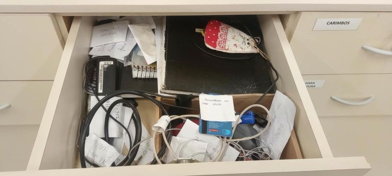
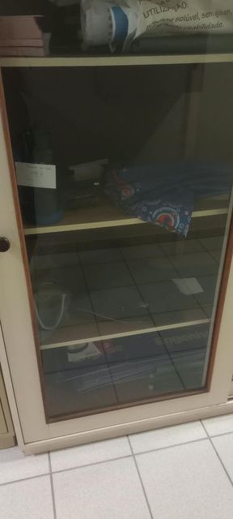
Durante o trabalho, observamos se as pessoas ao nosso redor perdiam objetos e iam até os achados e perdidos.
“Já perdi pasta A3 com materiais dentro, pote de vidro e guarda-chuva. Procurei nos achados e perdidos algumas vezes e não encontrei.”
“Perdi minhas chaves, mas não encontrei elas nos achados e perdidos.”
“Perdi um carregador. Demorou, mas ele apareceu nos achados e perdidos.”
“Perdi meu celular em casa. Sabia que estava lá, então pedi para minha namorada usar o app Buscar do iPhone para localizar, e encontrei.”
“Perdi meu estojo com várias canetas e marcadores de alto valor e não encontrei mais nos achados e perdidos.”
Etapa 7
5 soluções comparadas por eficiência, privacidade, recompensa e burocracia: 3 diretas, 1 indireta e 1 análoga.
| Similar | Eficiência | Privacidade | Recompensa | Burocracia | O que aprendemos |
|---|---|---|---|---|---|
| Grupo de Facebookdireto | Baixa. Depende da sorte de ambos estarem no mesmo grupo. | Nenhuma. Exige exposição total de perfis e fotos. | Depende. Algumas pessoas dão dinheiro em troca de achar o item. | Baixa e alta. Fácil postar, mas difícil controlar a segurança na entrega. | A exposição pessoal gera medo. Precisamos de uma forma que não exponha tanto as pessoas e faça o item chegar mais rápido ao dono, sem navegar por vários grupos. |
| Achados e Perdidos físicosdireto | Média. Só funciona se a pessoa lembrar exatamente onde deixou o objeto. | Alta. Quem achou deixa na caixa e a pessoa pega sem precisar de contato. | Não tem. | Depende. Às vezes exigem comprovação se o item for de valor. | Deixar e pegar o item de forma anônima é excelente, mas o processo não tem incentivo para que as pessoas deixem o item lá. |
| Tag rastreadoradireto | Altíssima. Rastreamento via Bluetooth em tempo real. | Alta. Protege os dados do dono. | Não tem, é um sistema de autorresgate. | Média. App intuitivo, mas há risco de danificar a tag e o custo é alto. | A precisão de localização é ideal, mas exige comprar uma tag por item (R$ 60 a R$ 370 cada), o que não é acessível para todos. |
| Uber: objeto esquecidoindireto | Alta. O sistema já sabe quem estava no carro na hora da perda. | Média. Mascara o telefone, mas exige encontro presencial. | Alta. Taxa fixa cobrada e repassada ao motorista. | Média. Requer abrir chamado no suporte e aguardar. | Taxas de devolução funcionam e motivam. Podemos aplicar uma recompensa transparente. |
| Tinderanálogo | Altíssima. O algoritmo cruza dados e interesses automaticamente. | Alta. O chat só é liberado depois do "match" das duas partes. | Não tem. | Baixa. A interface é focada em cliques rápidos. | Podemos usar a mecânica de cruzar características (ex.: chaveiro azul + bairro X) para automatizar o encontro, sem rolar um feed e perder tempo. |
Nenhuma solução atual junta três coisas num lugar só: recompensa para incentivar, anonimato e zero burocracia. O Uber mostrou que a recompensa funciona, e o Tinder provou que um "match" pode ser rápido e anônimo. Mas, nos achados e perdidos de hoje, ou perdemos horas na internet, ou a solução é muito cara, ou dependemos da sorte de achar o item num espaço físico.
Etapa 8
Juntamos o que apareceu no questionário (Q), nas entrevistas (E) e na observação (O) em 6 grupos.
Etapa 9
Jovens e adultos que perderam um item de valor financeiro ou sentimental e que podem ou não estar dispostos a dar uma recompensa em troca.
Evidências: E1, O1, O2
Pessoa solidária que encontrou o item e deseja devolver ao dono, mas tem dificuldade de achá-lo e medo de se expor.
Jovens e adultos, principalmente estudantes e trabalhadores entre 18 e 25 anos, que já perderam objetos de valor financeiro ou sentimental.
Principalmente em escolas, faculdades e locais de trabalho. Acontece algumas vezes ao mês ou, em muitos casos, raramente.
Refazem o caminho, procuram nos lugares por onde passaram, perguntam a funcionários ou vão aos Achados e Perdidos. Quando acham algo de outra pessoa, tentam localizar o dono, mas têm dificuldade.
A dificuldade de encontrar os objetos e descobrir quem os encontrou, a falta de confiança na devolução, o medo de perder algo valioso e o acesso difícil aos setores de Achados e Perdidos.
Praticidade e segurança para recuperar seus objetos, sem burocracia, mesmo que nem sempre confiem que vão ser devolvidos.
Gastar muito tempo ou esforço, pagar para usar a plataforma ou ter conhecimentos técnicos. O sistema precisa ser simples, fácil e acessível a todos.
Etapa 10
Imagens que mostram o universo de quem perde e de quem acha: caixas improvisadas de achados e perdidos, objetos do dia a dia, a FURB e o desespero de procurar.
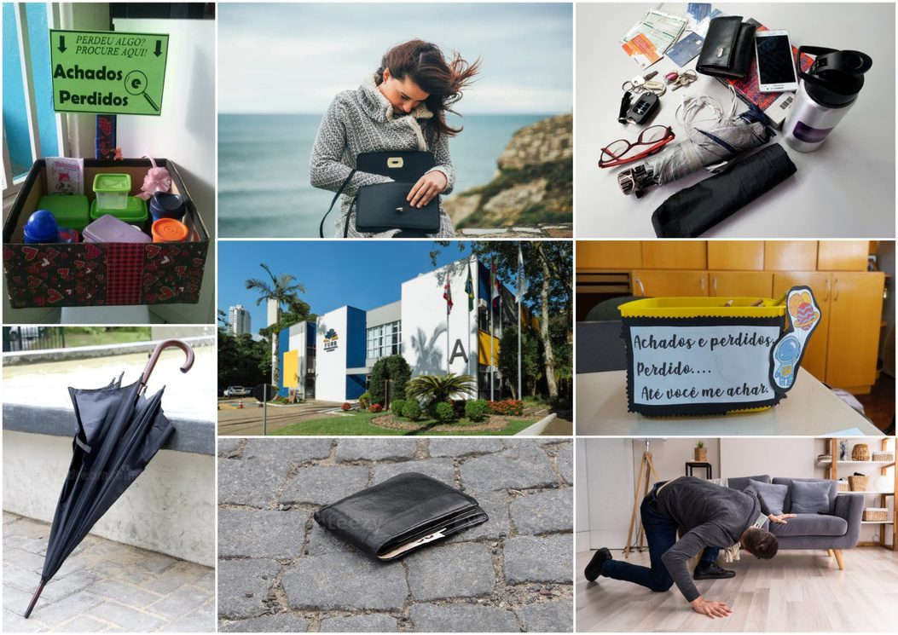
Etapa 11
Cada diretriz nasce de um dado da pesquisa. Toque num cartão para ver o raciocínio completo.
Etapa 12
Rascunhamos as ideias à mão e agrupamos em três conceitos. O produto final junta os três.
Site acessível e acolhedor que unifica acervos e conecta itens por localização, match e chat anônimo.
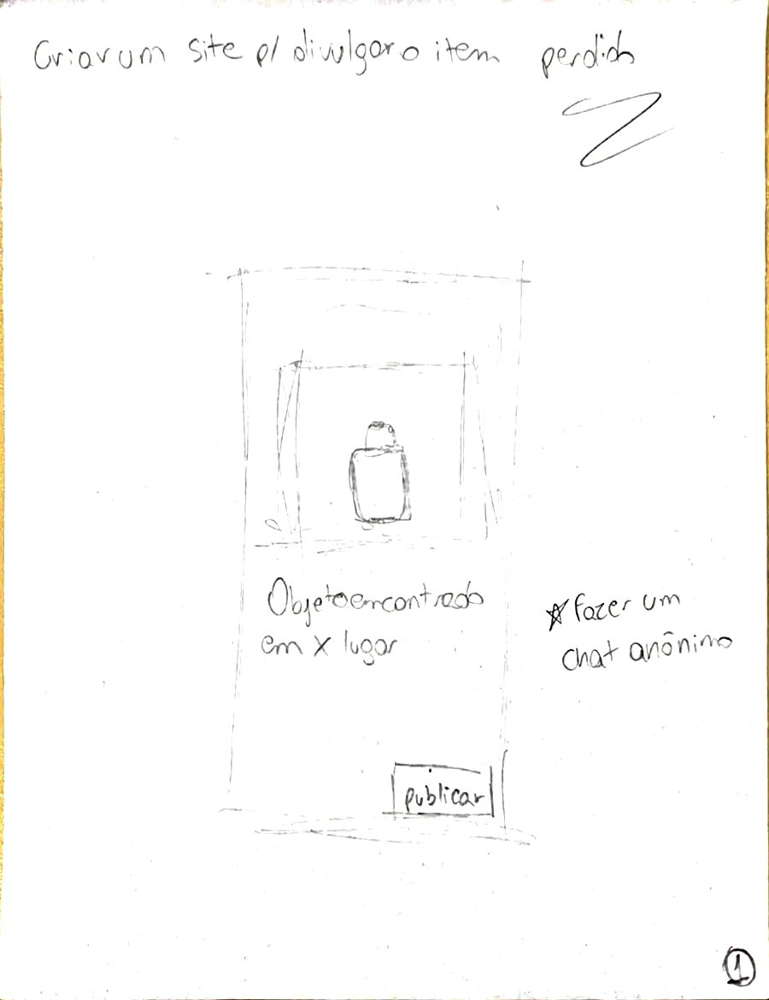
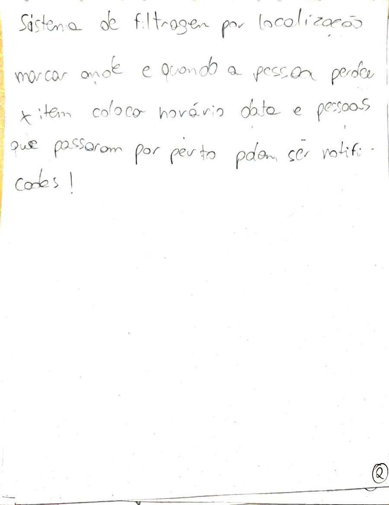
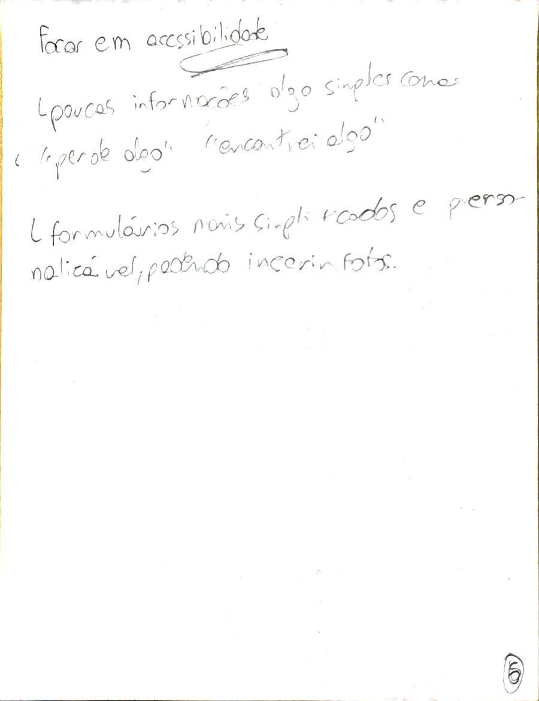
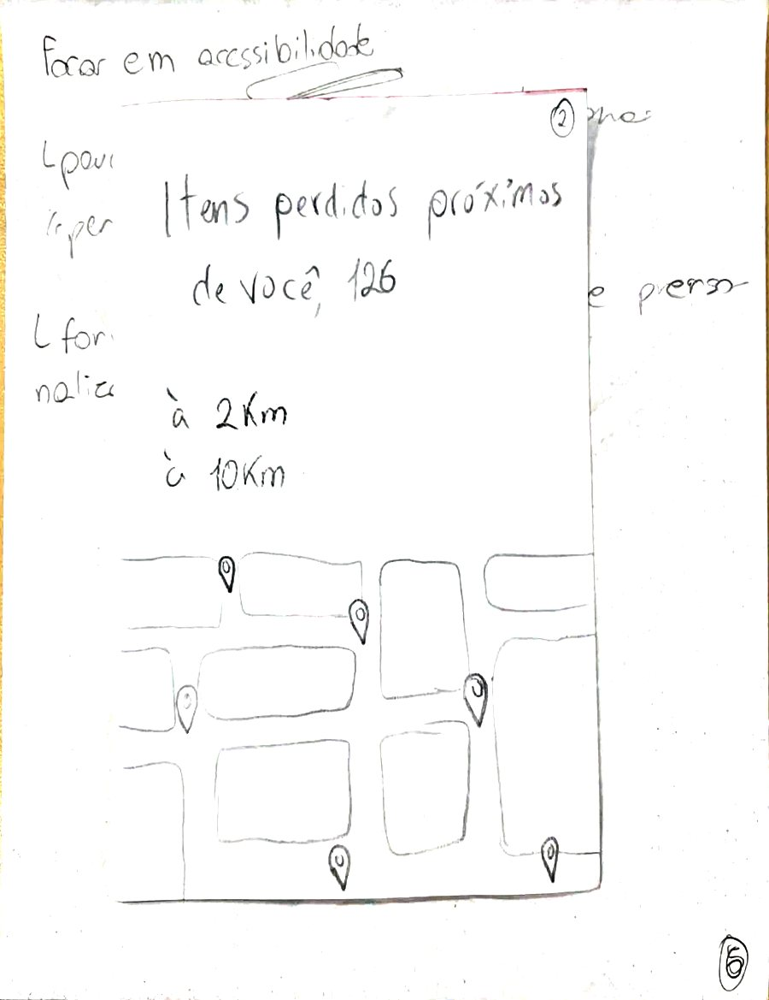
Validação do dono por característica oculta e entrega anônima em pontos de coleta com taxa opcional.
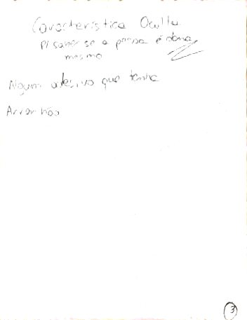
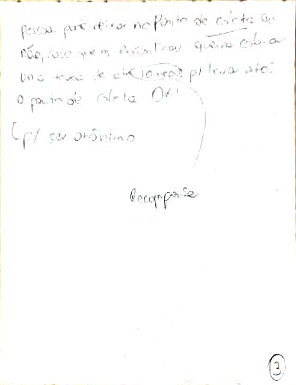
Estímulo à devolução com recompensas em dinheiro, selos de agradecimento e vouchers.
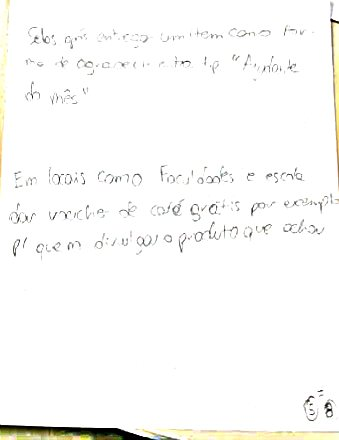
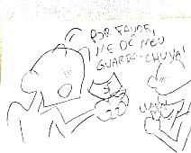
Etapa 13
Com os conceitos definidos, desenhamos à mão as telas principais antes de ir para o computador.
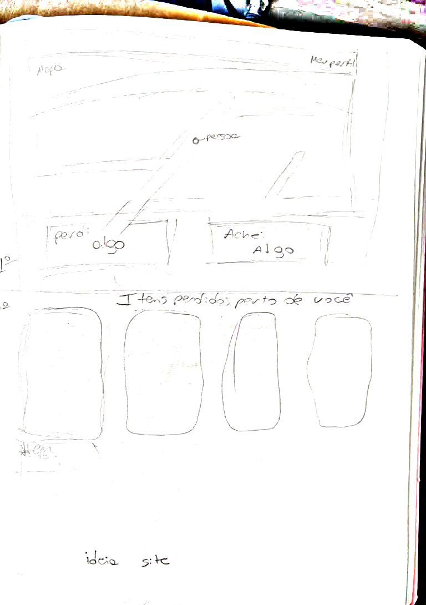
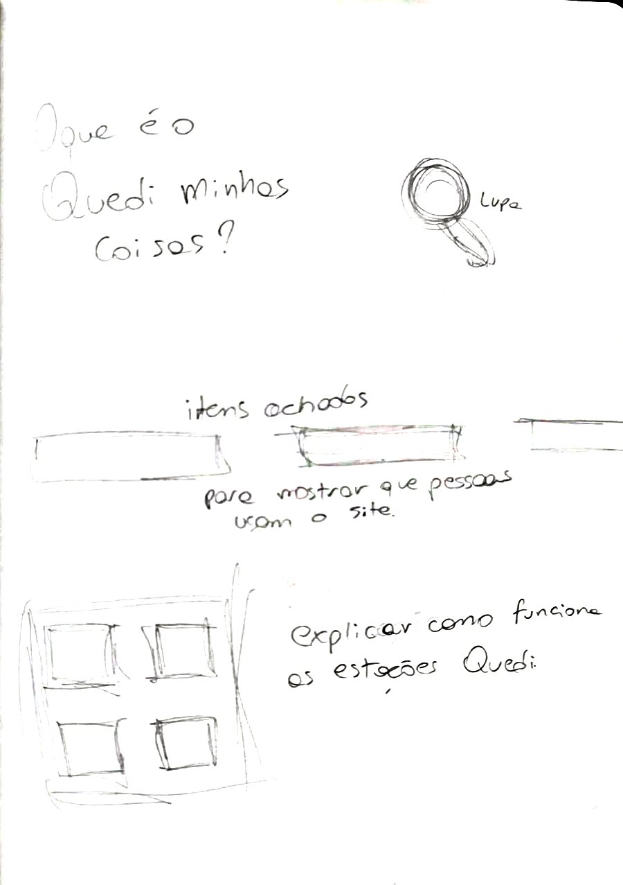
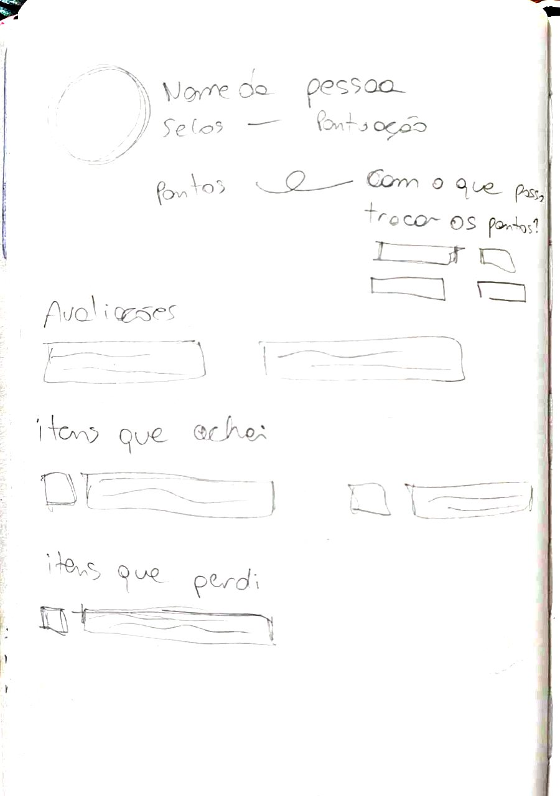
Etapa 14
Os três conceitos viraram um site só: uma página que apresenta a ideia e um protótipo navegável, com locais reais de Blumenau.
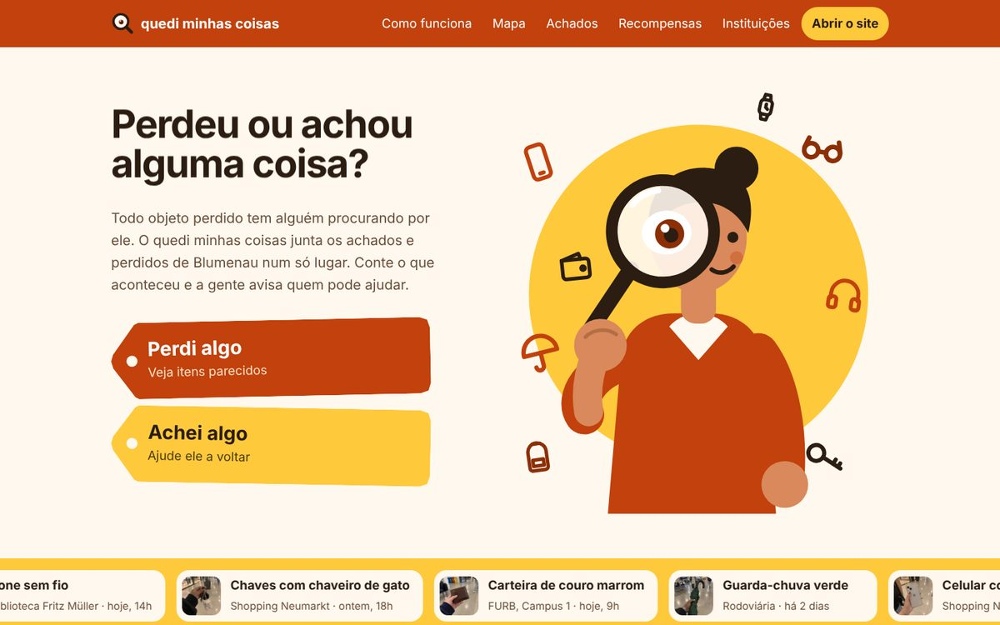
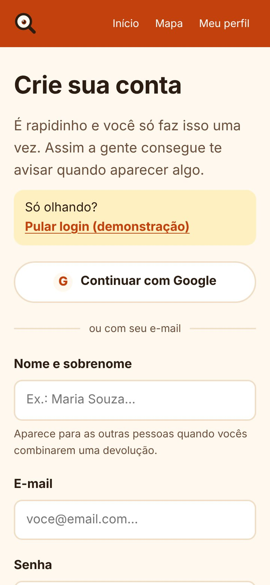
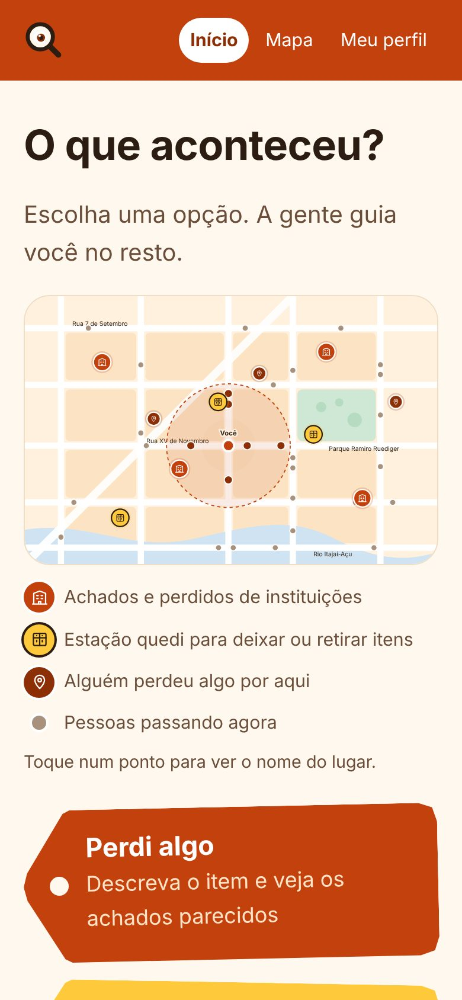
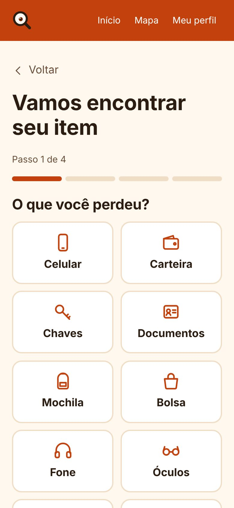
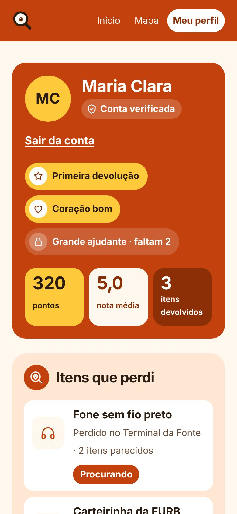
| Diretriz | No site |
|---|---|
| Facilitar o contato entre quem perdeu e quem achou | Itens parecidos com porcentagem de semelhança e chat anônimo |
| Tornar a busca mais fácil e rápida | Busca de local, mapa, período de horário e aviso para quem passou por perto |
| Mais segurança e confiança | Característica oculta, perfis verificados e Estações quedi com código de retirada |
| Menos estresse | Linguagem acolhedora e mensagens como "seu item já foi mostrado para 30 pessoas" |
| Incentivar a colaboração | Selos, avaliações e café na cantina parceira |
| Simples e acessível | Dois botões grandes, fonte feita para legibilidade, poucos campos por passo |
| Atender escolas, faculdades e trabalho | Achados e perdidos da FURB, shopping, rodoviária e biblioteca no mapa |
| Diferentes formas de incentivo | Pontos que viram Pix ou vale-presente, recompensa opcional de até R$ 10 e selos |
Apêndice
Apresentação: “Somos estudantes de Design da FURB e estamos fazendo uma pesquisa para um projeto da disciplina. A conversa leva cerca de vinte minutos, você pode parar quando quiser e não vamos identificar você no trabalho. Podemos gravar o áudio?”
Aquecimento: Quantos anos você tem? Você costuma esquecer muito as coisas?
Perguntas centrais:
Pergunta final: Tem algo que eu não perguntei e que você acha importante?
“Nós somos estudantes do 2º semestre de Design e estamos fazendo uma pesquisa para a matéria de Metodologia do Design com o professor Renato Valderramas justamente sobre isso: o desespero de perder um item. Queremos entender como é essa experiência no mundo real. Qual é a sua principal dificuldade ao tentar recuperar algo que você perdeu? E, por outro lado, como é tentar encontrar o dono de um objeto que você achou na rua? É super rapidinho, não leva nem 5 minutos, e você não precisa se identificar (é 100% anônimo).”
As perguntas e respostas completas estão na etapa Questionário.
Cada participante da entrevista assinou um termo explicando quem somos, para que é a pesquisa, quanto tempo leva, o que faremos com as respostas e o direito de desistir.
Fontes